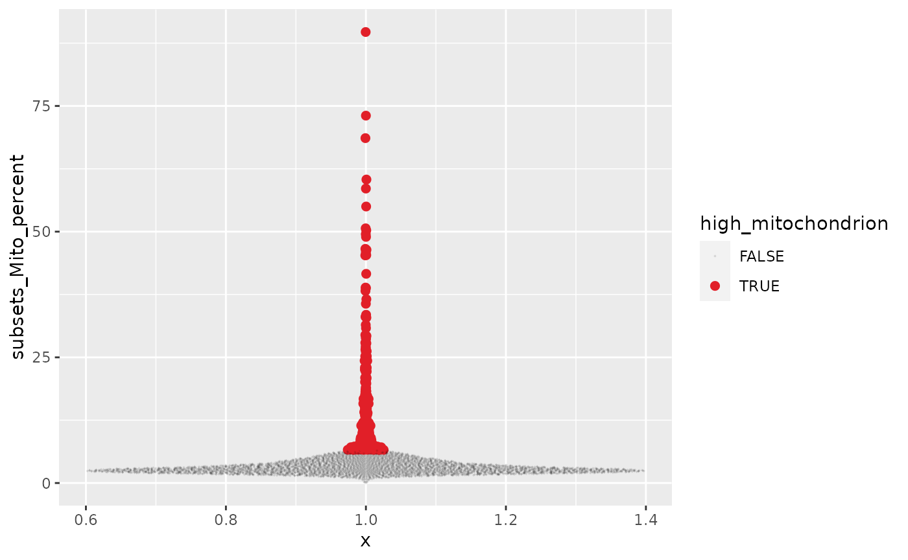

Single-cell Tidy Transcriptomics - analysis of single-cell RNA sequencing data with R tidy principles
Stefano Mangiola
The Walter and Eliza Hall Institute of Medical Research, 1G Royal Parade, Parkville, VIC 3052, Melbourne, Australia; Department of Medical Biology, The University of Melbourne, Parkville, VIC 3010, Melbourne, AustraliaMaria Doyle
Peter MacCallum Cancer Centre, 305 Grattan Street, Parkville, Melbourne, Victoria, Australia11 November 2020
Source:vignettes/tidy_single_cell.Rmd
tidy_single_cell.Rmd
Set-up
library(zhejiang2020)
# Bioconductor
library(scran)
library(scater)
library(EnsDb.Hsapiens.v86)
# tidyverse core packages
library(tibble)
library(dplyr)
library(tidyr)
library(readr)
library(magrittr)
library(ggplot2)
library(ggbeeswarm)
#library(tidyHeatmap)
library(SingleCellExperiment)
library(tidySingleCellExperiment)Participation
After the lecture, participants are expected to follow along the hands-on session. we highly recommend participants bringing your own laptop.
R / Bioconductor packages used
The following R/Bioconductor packages will be explicitly used:
- tidySingleCellExperiment
- DropletUtils
- scran
- scater
- singleR
数据准备
We get the original SingleCellExperiment data used in the previous session.
zhejiang2020::single_cell_experiment## class: SingleCellExperiment
## dim: 33694 4290
## metadata(1): Samples
## assays(1): counts
## rownames(33694): ENSG00000243485 ENSG00000237613 ... ENSG00000277475
## ENSG00000268674
## rowData names(2): ID Symbol
## colnames(4290): AAACCTGAGAAGGCCT-1 AAACCTGAGACAGACC-1 ...
## TTTGTCAGTTAAGACA-1 TTTGTCATCCCAAGAT-1
## colData names(2): Sample Barcode
## reducedDimNames(0):
## altExpNames(0):We can get a tidy representation where cell-wise information is displayed. The dataframe is displayed as tibble abstraction, to indicate that appears and act as a tibble, but underlies a SingleCellExperiment.
counts =
zhejiang2020::single_cell_experiment %>%
tidy()
counts## # A tibble abstraction: 4,290 x 3
## cell Sample Barcode
## <chr> <chr> <chr>
## 1 AAACCTGAGAAGGCCT-1 raw_gene_bc_matrices/GRCh38 AAACCTGAGAAGGCCT-1
## 2 AAACCTGAGACAGACC-1 raw_gene_bc_matrices/GRCh38 AAACCTGAGACAGACC-1
## 3 AAACCTGAGATAGTCA-1 raw_gene_bc_matrices/GRCh38 AAACCTGAGATAGTCA-1
## 4 AAACCTGAGGCATGGT-1 raw_gene_bc_matrices/GRCh38 AAACCTGAGGCATGGT-1
## 5 AAACCTGCAAGGTTCT-1 raw_gene_bc_matrices/GRCh38 AAACCTGCAAGGTTCT-1
## 6 AAACCTGCAGGATTGG-1 raw_gene_bc_matrices/GRCh38 AAACCTGCAGGATTGG-1
## 7 AAACCTGCAGGCGATA-1 raw_gene_bc_matrices/GRCh38 AAACCTGCAGGCGATA-1
## 8 AAACCTGCATGAAGTA-1 raw_gene_bc_matrices/GRCh38 AAACCTGCATGAAGTA-1
## 9 AAACCTGGTAAATGAC-1 raw_gene_bc_matrices/GRCh38 AAACCTGGTAAATGAC-1
## 10 AAACCTGGTACATCCA-1 raw_gene_bc_matrices/GRCh38 AAACCTGGTACATCCA-1
## # … with 4,280 more rowsIf we need, we can extract transcript information too. A regular tibble will be returned for independent visualisation and analyses.
counts %>%
join_transcripts("ENSG00000228463")## tidySingleCellExperiment says: A data frame is returned for independent data analysis.## # A tibble: 4,290 x 5
## cell transcript abundance_counts Sample Barcode
## <chr> <chr> <dbl> <chr> <chr>
## 1 AAACCTGAGAAG… ENSG00000228… 0 raw_gene_bc_matri… AAACCTGAGAAG…
## 2 AAACCTGAGACA… ENSG00000228… 0 raw_gene_bc_matri… AAACCTGAGACA…
## 3 AAACCTGAGATA… ENSG00000228… 0 raw_gene_bc_matri… AAACCTGAGATA…
## 4 AAACCTGAGGCA… ENSG00000228… 0 raw_gene_bc_matri… AAACCTGAGGCA…
## 5 AAACCTGCAAGG… ENSG00000228… 0 raw_gene_bc_matri… AAACCTGCAAGG…
## 6 AAACCTGCAGGA… ENSG00000228… 0 raw_gene_bc_matri… AAACCTGCAGGA…
## 7 AAACCTGCAGGC… ENSG00000228… 0 raw_gene_bc_matri… AAACCTGCAGGC…
## 8 AAACCTGCATGA… ENSG00000228… 0 raw_gene_bc_matri… AAACCTGCATGA…
## 9 AAACCTGGTAAA… ENSG00000228… 0 raw_gene_bc_matri… AAACCTGGTAAA…
## 10 AAACCTGGTACA… ENSG00000228… 0 raw_gene_bc_matri… AAACCTGGTACA…
## # … with 4,280 more rows对于得到的基因，根据gene ID 进行基因注释，得到基因名，并且知道其所在染色体（用于之后的细胞质量控制）。
#--- gene-annotation ---#
rownames(counts) <-
uniquifyFeatureNames(
rowData(counts)$ID,
rowData(counts)$Symbol
)这里，我们认为线粒体基因表达量高的barcode对应细胞质mRNA已经流出的破损细胞。并用这个指标来进行筛查过滤。
# Gene product location
location <- mapIds(
EnsDb.Hsapiens.v86,
keys=rowData(counts)$ID,
column="SEQNAME",
keytype="GENEID"
)## Warning: Unable to map 144 of 33694 requested IDs.
#--- quality-control ---#
counts_annotated =
counts %>%
# Join mitochondrion statistics
left_join(
perCellQCMetrics(., subsets=list(Mito=which(location=="MT"))) %>%
as_tibble(rownames="cell"),
by="cell"
) %>%
# Label cells
mutate(high_mitochondrion = isOutlier(subsets_Mito_percent, type="higher")) We can plot various statistics
counts_annotated %>%
plotColData(
y = "subsets_Mito_percent",
colour_by = "high_mitochondrion"
) +
ggtitle("Mito percent")
counts_annotated %>%
ggplot(aes(x=1,y=subsets_Mito_percent,
color = high_mitochondrion,
alpha=high_mitochondrion,
size= high_mitochondrion
)) +
ggbeeswarm::geom_quasirandom() +
# Customisation
scale_color_manual(values=c("black", "#e11f28")) +
scale_size_discrete(range = c(0, 2))## Warning: Using size for a discrete variable is not advised.## Warning: Using alpha for a discrete variable is not advised.
counts_filtered =
counts_annotated %>%
# Filter data
filter(!high_mitochondrion)
counts_filtered## # A tibble abstraction: 3,978 x 10
## cell Sample Barcode sum detected subsets_Mito_sum subsets_Mito_de…
## <chr> <chr> <chr> <dbl> <int> <dbl> <int>
## 1 AAAC… raw_g… AAACCT… 1738 748 111 11
## 2 AAAC… raw_g… AAACCT… 3240 1052 177 12
## 3 AAAC… raw_g… AAACCT… 2983 951 67 11
## 4 AAAC… raw_g… AAACCT… 4181 1248 93 10
## 5 AAAC… raw_g… AAACCT… 12147 2785 394 11
## 6 AAAC… raw_g… AAACCT… 8588 2278 385 11
## 7 AAAC… raw_g… AAACCT… 3158 1118 109 11
## 8 AAAC… raw_g… AAACCT… 5081 1437 90 10
## 9 AAAC… raw_g… AAACCT… 3562 970 66 11
## 10 AAAC… raw_g… AAACCT… 7157 1639 173 12
## # … with 3,968 more rows, and 3 more variables: subsets_Mito_percent <dbl>,
## # total <dbl>, high_mitochondrion <lgl>Scaling
#--- normalization ---#
set.seed(1000)
# Calculate clusters
clusters <- quickCluster(counts_filtered)
# Add scaled counts
counts_scaled <-
counts_filtered %>%
computeSumFactors(cluster=clusters) %>%
logNormCounts()
counts_scaled %>%
join_transcripts("CD79B")## tidySingleCellExperiment says: A data frame is returned for independent data analysis.## # A tibble: 3,978 x 14
## cell transcript abundance_counts abundance_logco… Sample Barcode sum
## <chr> <chr> <dbl> <dbl> <chr> <chr> <dbl>
## 1 AAAC… CD79B 0 0 raw_g… AAACCT… 1738
## 2 AAAC… CD79B 1 1.21 raw_g… AAACCT… 3240
## 3 AAAC… CD79B 0 0 raw_g… AAACCT… 2983
## 4 AAAC… CD79B 0 0 raw_g… AAACCT… 4181
## 5 AAAC… CD79B 0 0 raw_g… AAACCT… 12147
## 6 AAAC… CD79B 6 2.05 raw_g… AAACCT… 8588
## 7 AAAC… CD79B 4 2.75 raw_g… AAACCT… 3158
## 8 AAAC… CD79B 0 0 raw_g… AAACCT… 5081
## 9 AAAC… CD79B 0 0 raw_g… AAACCT… 3562
## 10 AAAC… CD79B 0 0 raw_g… AAACCT… 7157
## # … with 3,968 more rows, and 7 more variables: detected <int>,
## # subsets_Mito_sum <dbl>, subsets_Mito_detected <int>,
## # subsets_Mito_percent <dbl>, total <dbl>, high_mitochondrion <lgl>,
## # sizeFactor <dbl>Detect variable gene-transcripts
为了减轻下游分析工具的计算负担，减少数据中的噪声，我们需要先进行特征选择。
#--- variance-modelling ---#
set.seed(1001)
gene_variability <- modelGeneVarByPoisson(counts_scaled)
top_variable <- getTopHVGs(gene_variability, prop=0.1)Dimensionality reduction
特征选择后，单细胞表达矩阵的维数可以通过专门的降维算法进一步降低。使得数据可以直观可视化，并且将数据简化为基本组成部分。
#--- dimensionality-reduction ---#
set.seed(10000)
counts_reduction <-
counts_scaled %>%
denoisePCA(subset.row=top_variable, technical=gene_variability) %>%
runTSNE(dimred="PCA") %>%
runUMAP(dimred="PCA")
counts_reduction## # A tibble abstraction: 3,978 x 20
## cell Sample Barcode sum detected subsets_Mito_sum subsets_Mito_de…
## <chr> <chr> <chr> <dbl> <int> <dbl> <int>
## 1 AAAC… raw_g… AAACCT… 1738 748 111 11
## 2 AAAC… raw_g… AAACCT… 3240 1052 177 12
## 3 AAAC… raw_g… AAACCT… 2983 951 67 11
## 4 AAAC… raw_g… AAACCT… 4181 1248 93 10
## 5 AAAC… raw_g… AAACCT… 12147 2785 394 11
## 6 AAAC… raw_g… AAACCT… 8588 2278 385 11
## 7 AAAC… raw_g… AAACCT… 3158 1118 109 11
## 8 AAAC… raw_g… AAACCT… 5081 1437 90 10
## 9 AAAC… raw_g… AAACCT… 3562 970 66 11
## 10 AAAC… raw_g… AAACCT… 7157 1639 173 12
## # … with 3,968 more rows, and 13 more variables: subsets_Mito_percent <dbl>,
## # total <dbl>, high_mitochondrion <lgl>, sizeFactor <dbl>, PC1 <dbl>,
## # PC2 <dbl>, PC3 <dbl>, PC4 <dbl>, PC5 <dbl>, TSNE1 <dbl>, TSNE2 <dbl>,
## # UMAP1 <dbl>, UMAP2 <dbl>Clustering
counts_cluster <-
counts_reduction %>%
mutate(
cluster =
buildSNNGraph(., k=10, use.dimred = 'PCA') %>%
igraph::cluster_louvain() %$%
membership %>%
as.factor()
)
counts_cluster## # A tibble abstraction: 3,978 x 21
## cell Sample Barcode sum detected subsets_Mito_sum subsets_Mito_de…
## <chr> <chr> <chr> <dbl> <int> <dbl> <int>
## 1 AAAC… raw_g… AAACCT… 1738 748 111 11
## 2 AAAC… raw_g… AAACCT… 3240 1052 177 12
## 3 AAAC… raw_g… AAACCT… 2983 951 67 11
## 4 AAAC… raw_g… AAACCT… 4181 1248 93 10
## 5 AAAC… raw_g… AAACCT… 12147 2785 394 11
## 6 AAAC… raw_g… AAACCT… 8588 2278 385 11
## 7 AAAC… raw_g… AAACCT… 3158 1118 109 11
## 8 AAAC… raw_g… AAACCT… 5081 1437 90 10
## 9 AAAC… raw_g… AAACCT… 3562 970 66 11
## 10 AAAC… raw_g… AAACCT… 7157 1639 173 12
## # … with 3,968 more rows, and 14 more variables: subsets_Mito_percent <dbl>,
## # total <dbl>, high_mitochondrion <lgl>, sizeFactor <dbl>, cluster <fct>,
## # PC1 <dbl>, PC2 <dbl>, PC3 <dbl>, PC4 <dbl>, PC5 <dbl>, TSNE1 <dbl>,
## # TSNE2 <dbl>, UMAP1 <dbl>, UMAP2 <dbl>使用tSNE对聚类进行可视化。
plotTSNE(counts_cluster, colour_by="cluster",text_by="cluster")
counts_cluster %>%
ggplot(aes(
TSNE1, TSNE2,
color=cluster,
size = 1/subsets_Mito_percent
)) +
geom_point(alpha=0.2) +
theme_bw()